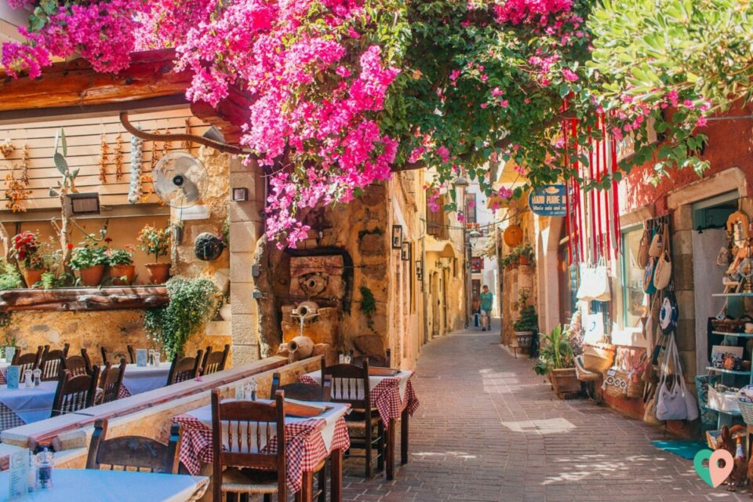
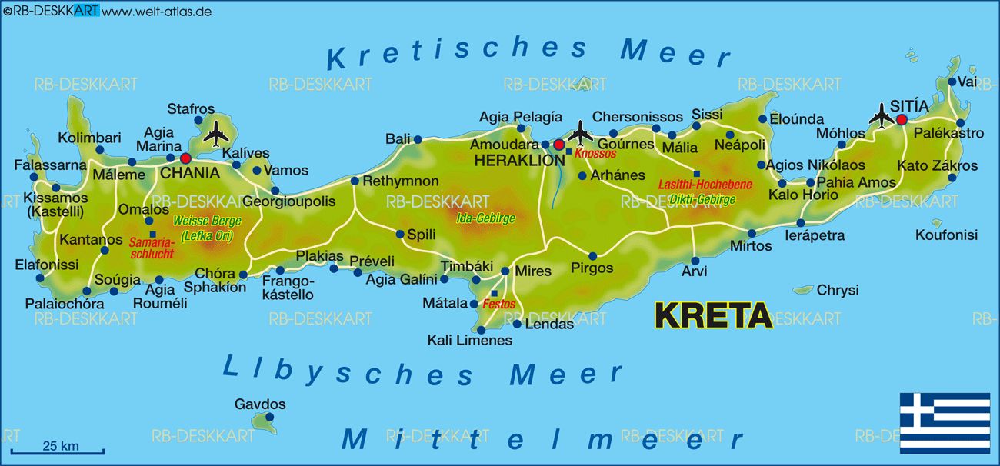

Strandwanderung Elafonissi

Erlebe das türkisfarbene Wasserund den feinen Sandbei einer leichten Wanderung am Meer – inkl. Baden und kleinem Lunchpaket.
Details ansehenSamaria-Schlucht Tour

Ein sportliches Naturerlebnis durch eine der längsten Schluchten Europas. Gutes Schuhwerk erforderlich!
Altstadt von Chania
Kulinarische Stadtführung durch Gassen, Hafen und Märkte, sowie romantischer Spaziergang durch die Altstadt bis zum Leuchtturm – inkl. Fotostopps & Tavernenbesuch.
